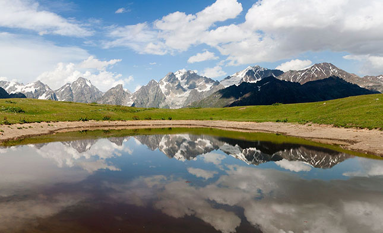

In the war of iron swords, Georgia stands by Israel - the Prime Minister of Georgia publicly expressed his absolute support for the State of Israel, sent his condolences and even sent a warm hug to the citizens. Georgian citizens also showed their support for Israel and held dozens of demonstrations in favor of our country. Israelis living in Georgia today report a genuine, sympathetic and tolerant attitude from the locals.
Do not miss a trip to the Caucasus mountain range, which defines the border between the continent of Europe and the continent of Asia, crosses several countries, including Russia, Armenia and of course Georgia, and is part of a large mountain chain known as the Alpine fold, which also includes the Alps and the Himalayas. The Caucasus Mountains are divided into the Greater Caucasus Mountain Range, located in northern Georgia along the Russian border and reaching a length of about 1,200 kilometers, and the Lesser Caucasus Mountain Range, located in southern Georgia along the Turkish border and reaching a length of approximately 600 kilometers. A trip in the Caucasus region is usually done in jeeps and accompanied by experienced and professional field guides, which makes the trip experience, along with breathtaking views of soaring mountains and green carpets, a special and unforgettable adventure.
Back to Homepage